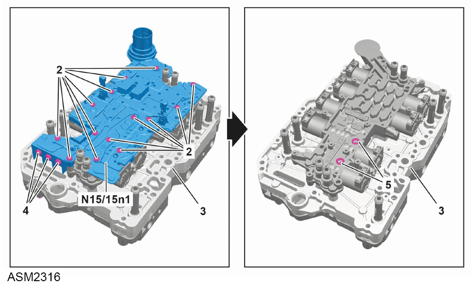

Control Unit - 4 Cylinder
Print
Operation Code: 47.02.17-02
Important
 WARNING: Transmission oil is a toxic substance and can be lethal if ingested. Wear protective gloves, protective clothing and safety glasses.
WARNING: Transmission oil is a toxic substance and can be lethal if ingested. Wear protective gloves, protective clothing and safety glasses.
Removal
- If control unit is to be renewed, read out control unit and save adaptation values.
- Remove controller unit assembly. Refer to procedure.

- Remove and discard M4 bolts (2) (x14) securing control unit (N15/15n1) to controller unit assembly (3). Torque 2 Nm + 90 degrees.
 CAUTION: These fasteners have been torqued to a specification where the threads may have been damaged or stretched. Always discard and replace with new on installation.
CAUTION: These fasteners have been torqued to a specification where the threads may have been damaged or stretched. Always discard and replace with new on installation.
- Remove bolts (4) (x3) securing tandem oil pump to control unit. Torque 5 Nm.
- Remove control unit.
- Remove and discard O-rings (5) (x2).
Installation
- Installation is the reverse of removal procedure except for the following:
NOTE: Ensure control unit is positioned correctly on controller unit assembly.
- Renew discarded O-rings.
- Apply transmission oil to O-rings.
- Renew discarded bolts.
- Transfer stored adaptation values to control unit and perform SCN coding using Lotus Insight tool.
- Perform a diagnostic read and clear error memory using Lotus Insight tool.